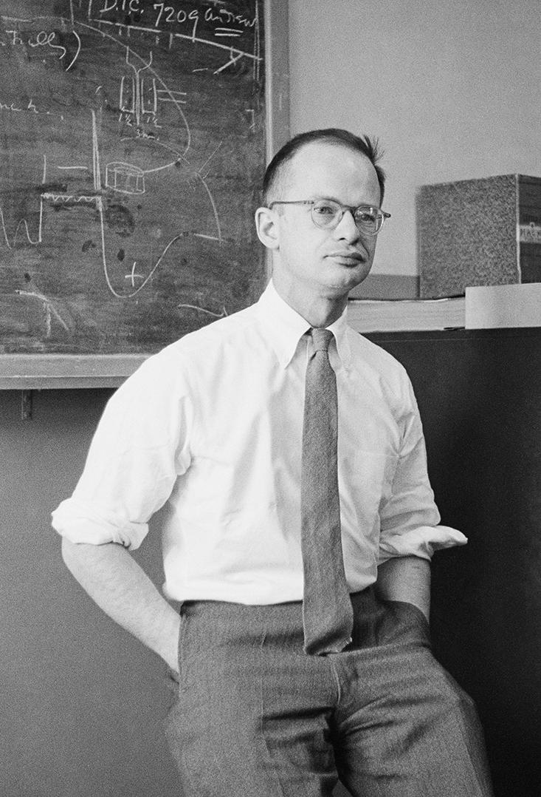

Walter Pitts (1923-1969)
Made significant contributions to neuroscience and artificial intelligence
"in no uncertain sense the genius of the group … when you asked him a question, you would get back a whole textbook."
Background Information
| Date of Birth | Born on April 23rd, 1923 |
|---|---|
| Birthplace | Born in Detroit, Michigan |
| Parents | Walter Pitts senior and Marie Pitts |
| Age at Death | 46 years |
| Date of Death | Died May 14, 1969 |
Walter Pitts’ father was a boiler-maker in Detroit. Growing up, Pitts was never understood by his family and friends due to his academic interests in logic, math and languages. He soon learned Greek and Latin and self taught himself logic and math. At the age of 12 he wrote a letter to Bertrand Russell pointing out errors in his book: Principia Mathematica. Russell invited him to study at the University of Cambridge but Pitts did not take the opportunity. At the age of 15 Pitts ran away from home to attend Russell’s lectures at the University of Chicago. Unfortunately, Pitts never enrolled as a student and didn't get a degree, although he got many invitations from universities.
Areas of Expertise
Walter Pitts was mainly self-taught. He had learned logic and mathematics through books at a very early age. He was an expert in cybernetics, artificial intelligence and computational neuroscience. In his early life, he was mentored and inspired by Bertrand Russell. Pitts greatest achievement was writing the influential paper "A Logical Calculus of Ideas Immanent in Nervous Activity" with his friend Warren McCulloch. He gained recognition after his death for his contributions to artificial intelligence and neural networks, which continue to influence the fields today.
Impact on the World
Walter Pitts' greatest impact on the world was his work on the McCulloch-Pitts neuron model which continues to influence modern neural network structures. He is viewed as a brilliant scientist who did not get enough recognition and did not explore his full potential. Since his work was not widely recognized during his lifetime, he did not receive any awards. Pitts’ got to collaborate with well known people, changing his life and career. Unfortunately, Pitts’ faced many personal problems and died without getting much recognition. His work had a lasting impact on the development of artificial neural networks more than 50 years after his death. Even today Walter Pitts’ work is used as a reference to modern artificial intelligence and neural networks.
Sources
Walter Pitts - WikipediaThe Man Who Tried to Redeem the World with Logic - Nautilus
home.csulb.edu/~cwallis/artificialn/walter_pitts.html